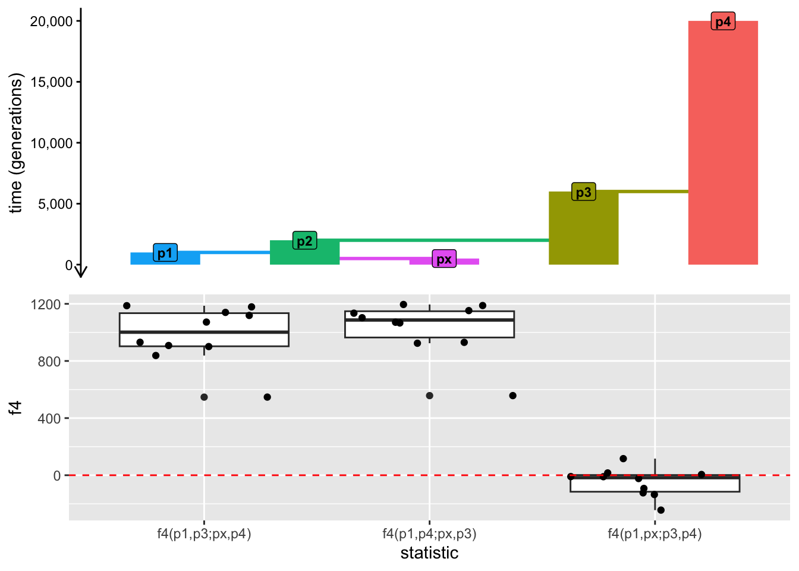
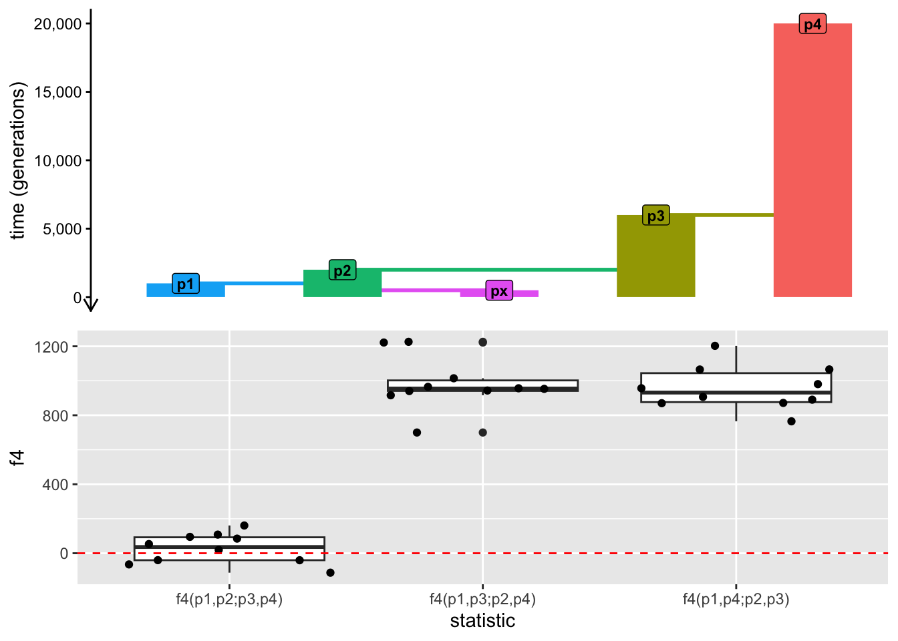
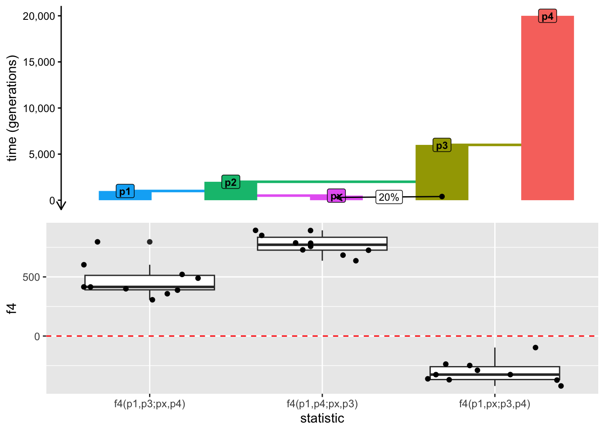
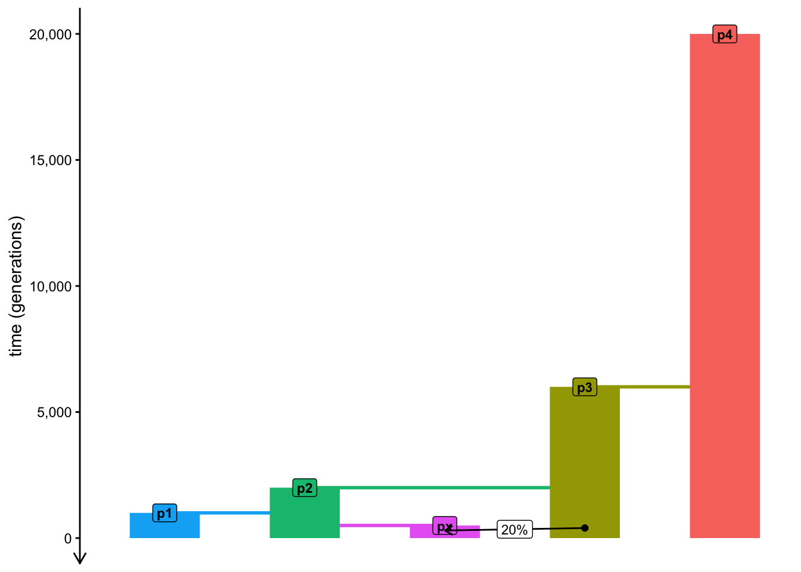

We have so far focused on learning how to construct slendr demographic models, how to compute summary statistics, and how exploratory, simulation-based workflows help us study the behavior and limitations of those statistics.
In this chapter, we will change the pace a bit, and play with slendr as a bit of an “interactive popgen calculator” to quickly explore theoretical concepts in a hands-on practical way, and build intuition into how (and why) they work the way they do. We will also dig a little bit more into the tree-sequence data itself.
Our main focus will be on \(f\)-statistics, mostly because they form such a crucial component of population genomics research, specifically within the aDNA context, and because they showcase very nicely why simulation-based exploration can be so powerful. In the process, we will also learn a few useful slendr tricks which are applicable for many other research problems.
Exercise: “Outgroup” \(f_3\) as a measure of overlap of tree paths
To ease into the problem of interpreting \(f\)-statistics as measures of overlapping paths in “population trees” (or, when admixture comes into the picture), in “population graphs”, let’s get back to our familiar \(f_3\) statistic.
Create a new script fstatistics.R and paste the following code into that script. As always, read through the code, try to decipher what it’s going to do, run it and compare your understanding with the visualization of the model.
library(slendr)init_env()p4 <-population("p4", time =20000, N =1000)p3 <-population("p3", time =6000, N =1000, parent = p4)p2 <-population("p2", time =2000, N =1000, parent = p3)p1 <-population("p1", time =1000, N =1000, parent = p2)px <-population("px", time =500, N =1000, parent = p2)model <-compile_model(populations =list(p1, p2, p3, p4, px), generation_time =1)schedule <-schedule_recording(model, times =0, list("each", 10))plot_model(model, schedule = schedule)
\(f_2(A, B)\) statistic measures the branch length between two samples A and B (two individuals, two groups of individuals, etc.), and
similarly, \(f_3(C; A, B)\) statistic is formally defined as the branch length which connects the internal most recent common ancestor node of A and B with the sample C.
This can be seen graphically in Figure 1 of that linked paper.
Another thing established in the paper is the fact that any \(f\)-statistic can be expressed as a linear combination of \(f_2\) statistics. If you’re not familiar with linear algebra, this might sound a bit obscure. More concretely, for instance, equation (20b) in the same paper states the following, which decomposes an \(f_3\) statistic into a composite of simpler \(f_2\) statistics (this is what “linear combination” basically is):
\[f_3(A; B, C) = \frac{1}{2} (f_2(A, C) + f_2(A, B) - f_2(B, C))\]
Draw a sketch of the population model plotted above on a piece of paper, then trace by hand the paths indicated by the three \(f_2\) statistics in this equation on that drawn model (again, knowing that \(f_2(x, y)\) indicates the length of the path from (\(x\) to \(y\)), let’s say substituting A = p4, B = p1, C = p2. When you add up and subtract the paths from each other (graphically, on your drawn model), do you arrive at the definition of “outgroup” \(f_3\) as a measure of shared branch between B and C towards the outgroup A?
True story: When I was writing this chapter, I made a mistake in the equation above, and wrote a quick simulation to double-check that the equation is correct. This is the true motivation for this little exercise, showing why simulations are also helpful!
Now let’s move to R. Use the function ts_f2() to implement this equation in code, computing a “homemade” \(f_3(A = p4; B = p1, C = p2)\) statistic which you just solved on paper, and compare it to the result produced by ts_f3() provided by slendr. Do you get the same result?
NoteClick to see the solution
First let’s get our groups of individuals in the tree sequence:
Now let’s compute \(f_3\) using the built-in slendr function:
simulated_f3 <-ts_f3(ts, A = s["p4"], B = s["p1"], C = s["p2"])simulated_f3
# A tibble: 1 × 5
A B C statistic f3
<chr> <chr> <chr> <chr> <dbl>
1 p4 p1 p2 f3(p4;p1,p2) 0.000112
And now let’s compose a “homemade” \(f_3\) statistic as a linear combination of \(f_2\) statistics as given by the equation:
homemade_f3 <-1/2* (ts_f2(ts, A = s["p4"], B = s["p1"])$f2 +ts_f2(ts, A = s["p4"], B = s["p2"])$f2 -ts_f2(ts, A = s["p1"], B = s["p2"])$f2)homemade_f3
[1] 0.0001119055
You can see that the ts_f3() implementation gives basically the same value as our “homemade” implementation based on a linear combination of \(f_2\) statistics, just as predicted by the underlying math!
Exercise: Mutations versus branches
Do you recall how I told you earlier that you don’t have to add mutations to your tree sequence ts, and still be able to compute population genetic statistics? But that you can safely add them with ts_mutate() anyway?
The reason this works is because some very smart people figured out a mathematical duality between mutation-based and branch-based statistics—it actually doesn’t matter which way we compute our statistics, they give mathematically the same result in terms of theoretical statistical expectations (i.e., expectations of what happen in real data).
Try to repeat the previous task, but this time specify mode = "branch" in all your ts_f3() and ts_f2() commands. Feel free to make a copy of your ts_f3() and ts_f2()-based code in your f_null.R script and and modify the copies for easier comparison. What numbers do you get compared to the results of the previous exercise? Can you relate those numbers to what your population tree model visualization indicates (in terms of branch lenghts)? Look at your sketch with pen and paper again if this helps.
NoteClick to see the solution
ts_f3(ts, A = s["p4"], B = s["p1"], C = s["p2"], mode ="branch")
# A tibble: 1 × 5
A B C statistic f3
<chr> <chr> <chr> <chr> <dbl>
1 p4 p1 p2 f3(p4;p1,p2) 10802.
homemade_f3 <- (ts_f2(ts, A = s["p4"], B = s["p1"], mode ="branch")$f2 +ts_f2(ts, A = s["p4"], B = s["p2"], mode ="branch")$f2 -ts_f2(ts, A = s["p1"], B = s["p2"], mode ="branch")$f2) /2homemade_f3
[1] 10801.91
We can see that when we use the "branch" mode of operation, the returned values of \(f\) statistics correspond to the real branch lengths in terms of times! Which is quite cool because as we discussed, the mathematical expectation of \(f\) statistics does, after all, represent tree path overlap going from p1 and p2 to the “outgroup” p4:
Hopefully, you can now appreciate that there’s nothing magical about \(f\) statistics. Even though their practical interpretation can get sometimes complicated, internally they always boil down to tracing paths through population trees in order to obtain statistical expectations of allele frequency correlations between lineages under study, easily visualized by tracing paths through population trees.
In a way, setting mode = "branch" can be understood as instructing slendr to compute the results — in this case, of the \(f_3\) statistic — in “real time units”, generations.
Exercise: Basic intuition into the \(f_4\) statistic
Now let’s finally dig into exploring perhaps the most critical component of population genetics research (particularly in the context of ancient DNA genomics)—the venerable \(f_4\)-statistic, formally established by Nick Patterson and David Reich in 2008.
From the intuitive follow-up paper on \(f\)-statistics by Benjamin Peter, we know that (in a very similar way to \(f_2\) and \(f_3\)), the \(f_4(W, X; Y, Z)\) statistic can be interpreted as quantifying the overlap between the paths in a tree connecting W-X and Y-Z pairs of lineages, as is demonstrated in Figure 1 of the linked paper.
That said, what value does any given \(f_4\) statistic actually gives you of course depends on the (in practice, hidden) underlying demographic model which determines how populations are related and also what do we assign into each of the four positions of that \(f_4\) “quartet configuration”.
Given the phylogenetic relationships between the populations encoded by the model in f_null.R, what value would you expect for \(f_4(p1, p2; p3, p4)\)? try to guess first without any coding simply by taking a look at the sketch of your model again tracing the path overlaps between p1-p2 and p3-p4, then compute the statistic on a ts simulated data with the ts_f4() function. Does your simulation give you the exact result you might expect based on the visualization of the model alone? If it doesn’t give you the exact expected result, why could this be?
Noteclick to see the solution
As we can see below, \(f\)-statistics theory tells us that the value should be zero, but without any reference point, we get a number which is very tiny (the value in the f4 column), but how tiny would it have to be to be “basically zero”?
ts_f4(ts, W = s["p1"], X = s["px"], Y = s["p3"], Z = s["p4"])
# A tibble: 1 × 6
W X Y Z statistic f4
<chr> <chr> <chr> <chr> <chr> <dbl>
1 p1 px p3 p4 f4(p1,px;p3,p4) 0.000000788
The reason we didn’t get exactly zero is stochastic noise of any evolutionary process, which means that that along a genome (even a small one, only 10 Mb of simulated sequence) there are many possible trees. Sometimes, incomplete lineage sorting will lead to genealogical trees which do not fit the tidy, well-behaved population tree like the one we see when we run plot_model().
That said, gene trees that don’t fit the overall population trees will tend to “average out”, particularly when we look across many different regions of the genome.
As suggested in the solution above, the reason we don’t get a perfectly zero expected value of the \(f_4\) is because of ILS and stochasticity. Let’s test this hypothesis now.
First, evaluate ts in your R console and note how many individual trees do you have in your 10 Mb tree-sequence.
Now, restart your R session (Session -> Restart R). Then, temporarily change the \(N_e\) of all lineages in your model to 1 and re-run your script to get a new ts and compute the same \(f_4\) statistic again. \(N_e\) of one implies ridiculously high amount of drift, which should eliminate ILS completely, giving us \(f_4\) close to its mathematical expectation of zero. Is this true? How many trees does your tree sequence have now?
NoteClick to see the solution
We changed all N sizes to 1, then we rerun the entire script f_statistics.R again:
library(slendr)init_env()## !!!# note the (temporary) change to N = 1# !!!#p4 <-population("p4", time =20000, N =1)p3 <-population("p3", time =6000, N =1, parent = p4)p2 <-population("p2", time =2000, N =1, parent = p3)p1 <-population("p1", time =1000, N =1, parent = p2)px <-population("px", time =500, N =1, parent = p2)model <-compile_model(populations =list(p1, p2, p3, p4, px), generation_time =1)schedule <-schedule_recording(model, times =0, list("each", 10))ts <-msprime(model, sequence_length =1e6, recombination_rate =1e-8, schedule = schedule) %>%ts_mutate(mutation_rate =1e-8)s <-ts_names(ts, split =TRUE)
Now let’s compute the \(f_4\) again on the ts tree sequence produced by this extreme model:
ts_f4(ts, W = s["p1"], X = s["p2"], Y = s["p3"], Z = s["p4"])
# A tibble: 1 × 6
W X Y Z statistic f4
<chr> <chr> <chr> <chr> <chr> <dbl>
1 p1 p2 p3 p4 f4(p1,p2;p3,p4) 0
Indeed, when we type ts into the R console, we see that it only contains {r} ts$num_trees individual trees compared to the previous count of {r} ts_num_trees, consistent with an absolutely extreme amounts of genetic drift in your model.
Of course, changing \(N_e\) to value of 1 as we did above is a drastic measure of generally only theoretical utility. We could hardly get away with doing that, if we wanted to use simulations to make a point in our research paper.
How do we deal with the unavoidable stochasticity in our simulations then? This wasn’t much of a problem in exercises in the previous chapters, but we need the way to solve this to be able to get useful, applicable results.
Let’s look into this now.
NoteClick to see the solution
Exercise: Reducing stochastic noise via simulation replicates
As a means to tame the stochasticity and help meaningful statistical patterns stand out, I recently implemented a new slendr function ts_replicates(), specifically for this workshop! The way it works is like this:
ts_replicate(n =<number of replicates>, {# ...# a block of slendr code wrapped in { ... } containing a ts simulation# and a slendr statistical computation we want to run in replicates# ... })
Take a look at its manual page under ?ts_replicates, then use it to run 10 replicate simulations of the \(f_4\) statistic above (the one which should give us a zero expectation, but it wasn’t clear if it did or not), saving it to variable df. What format does the result have? When you visualize the distribution of \(f_4\) values across all replicates, are they more understandable in terms of the statistical expectation for this particular \(f_4\) quartet?
Note: If you want to speed up the replicate simulation, not that ?ts_replicate describes the means to run multiple simulations in parallel.
NoteClick to see the solution
Here’s how we can tweak the “template” above to answer the question:
df <-ts_replicate(n =10, { ts <-msprime(model, sequence_length =1e6, recombination_rate =1e-8, schedule = schedule) %>%ts_mutate(mutation_rate =1e-8) s <-ts_names(ts, split =TRUE)ts_f4(ts, W = s["p1"], X = s["p2"], Y = s["p3"], Z = s["p4"])})
We can see that we get the same format of the data frame as normally produced by the ts_f4() function, except with a new column rep added, indicating a replicate number.
As we can see, when we run multiple replicates of the simulation, we are able to “control” the stochastic noise a bit, making the expected pattern stand out more clearly: we see that the expected value of f4(p1,p2;p3,p4) is really zero (up to that unavoidable stochastic noise).
Exercise: Other \(f_4\) “quartets”
Of course, \(f_4(p1, p2; p3, p4)\) is only one possible “quartet configuration”.
Expand your 10 replicates simulation \(f_4(p1, p2; p3, p4)\) by adding the computation of \(f_4(p1, p3; p2, p4)\) and \(f_4(p1, p4; p2, p3)\) in the same {...} block provided to ts_replicate() (making sure you bind all three data resulting frames together at the end)..
How would you compare the interpretation of the three \(f_4\) statistics, looking at your sketch of the four-population model (or by looking at the visualization of the model below), before running and visualizing the expanded replication code you just wrote? Does your interpretation fit what you get from the simulation once you run it?
NoteClick to see the solution
Let’s add the computation of all three \(f_4\) statistics in the same replicate simulation pipeline:
df <-ts_replicate(n =10, { ts <-msprime(model, sequence_length =1e6, recombination_rate =1e-8, schedule = schedule) %>%ts_mutate(mutation_rate =1e-8) s <-ts_names(ts, split =TRUE)rbind(ts_f4(ts, W = s["p1"], X = s["p2"], Y = s["p3"], Z = s["p4"]), # 1st f4ts_f4(ts, W = s["p1"], X = s["p3"], Y = s["p2"], Z = s["p4"]), # 2nd f4ts_f4(ts, W = s["p1"], X = s["p4"], Y = s["p2"], Z = s["p3"]) # 3rd f4 )})
We get a data frame with multiple replicates for each of the three statistics:
From the mathematical definition of \(f_4\) as internal branch lengths between two pairs of lineages in a given “quartet” and knowing the topological structure of our population tree, we can predict that the first \(f_4\) is expected to be zero (which is what we established earlier), and the other two \(f_4\) statistics are expected to have the same value corresponding to the internal branch length connecting pairs p1-p2 and p3-p4.
Make a copy of your ts_replicate() code and modify it by setting mode = "branch", as we did before for the example \(f_3\) simulation. As mentioned above, this instructs slendr’s internal statistical machinery to effectively use “model time units” (here, generations) in computing the results. When you visualize the three \(f_4\) statistics computed in this way, do you see this being the case?
NoteClick to see the solution
Let’s save the result in a new data frame df_branch:
df_branch <-ts_replicate(n =10, { ts <-msprime(model, sequence_length =1e6, recombination_rate =1e-8, schedule = schedule) %>%ts_mutate(mutation_rate =1e-8) s <-ts_names(ts, split =TRUE)rbind(ts_f4(ts, W = s["p1"], X = s["p2"], Y = s["p3"], Z = s["p4"], mode ="branch"), # 1st f4ts_f4(ts, W = s["p1"], X = s["p3"], Y = s["p2"], Z = s["p4"], mode ="branch"), # 2nd f4ts_f4(ts, W = s["p1"], X = s["p4"], Y = s["p2"], Z = s["p3"], mode ="branch") # 3rd f4 )})
When we visualize the results, we do indeed see that the f4 column contains the expected branch lengths expressed in real generation times! Here are the results plotted alongside the model using the package cowplot (from which the branch length times can be read more easily):
library(cowplot) # get access to the plot_grid() functionplot_grid(# first panel:plot_model(model, schedule = schedule),# second panel:ggplot(df_branch, aes(statistic, f4)) +geom_boxplot() +geom_jitter() +geom_hline(yintercept =0, color ="red", linetype ="dashed"),# plot both panels in two rows:nrow =2)

Catch up
This was a lot of work! If you want to check in with the state of our \(f\)-statistics exploratory simulation script f_null.R, here it is in the form which showcases the most important results from this chapter so far:
NoteClick to see the entire script

Exercise: Interpreting \(f_4\) as an admixture hypothesis test
Admittedly, thinking about \(f\) statistics as measures of allele frequency correlations between populations and interpreting them as overlapping branch lengths is intellectually interesting in terms of population genetics theory (at least if you’re a nerd like me!), but in practice, they are most famous as admixture tests.
Create a new script f_admixture.R and copy my solutions to the exercises in this chapter available under the “Catch up” section into that script. Restart your R session (Session -> Restart R) then skim through this script and re-run it all. Having gone through the exercises, the code should look somewhat familiar and the visualization you obtain by typing out p_panels into your R console (the branch lengths encoded by the three \(f_4\) statistics we studied) should make sense.
NoteClick to see the solution
Here’s the final visualization of the three \(f_3\) statistics for easier reference as you work on the following exercise.
Introduce the following two changes to the f_admixture.R script:
Program a gene_flow() event gf, introducing 10% gene-flow from p3 to p2 between 500 and 400 generations ago.
Add this gf event into the model compilation step, making sure it’s included in the demographic model.
With the steps 1. and 2. done, you’re model now includes admixture. Re-run the script again, and inspect the final visualization obtained by typing out p_panels into your R console.
How does admixture from p3 to p2 affect the branch lengths compared to the previous model f_null.R, which (as the name indicates) represented a null model of no admixture? Pay particular attention to the \(f_4(p1,p2;p3,p4)\) statistic which had an expected value of zero—does it still have a zero value?
NoteClick to see the solution
Here’s only the final visualization of the figure in the p_panel variable:

As we can see, because of the admixture event, our previously tree-like population model is no longer tree. In the tree model without an admixture edge, there was no path overlap between the pairs p1-p2 and p3-p4, which is why the \(f_4(p1,p2;p3,p4)\) statistic was zero.
Admixture is a violation of “treeness”, because “mathematical” trees are not allowed to have admixture edges—structures which do have edges are called “admixture graphs”, This is why the statistic now significantly deviates from zero.
This is exactly why \(f_4(p1,p2;p3,p4)\) serves as a statistical hypothesis test of admixture.
Exercise: Estimating admixture proportions
From the little simulation and tree-doodling experiments above we now got a sense of how various \(f\) statistics (and particularly \(f_4\) statistics) mathematically quantify allele frequency correlations between lineages of population trees and how they can be interpreted as the amounts of overlaps of paths traced along branches of those trees. We also got an idea how different patterns emerge in \(f_4\) statistic expectation when gene-flow is introduced into population trees, adding admixture edges to them and turning them into so-called “admixture graphs”.
It turns out that the same principles allow us to not just test the hypothesis of whether an admixture event happened in the history of our samples, but also estimate the proportion of ancestry derived from admixture.
f4ratios <-ts_replicate(n =20, { ts <-msprime(model, sequence_length =10e6, recombination_rate =1e-8) %>%ts_mutate(mutation_rate =1e-8) s <-ts_names(ts, split =TRUE)# one possible "f4-ratio" variant num1 <-ts_f4(ts, W = s["p1"], X = s["p4"], Y = s["px"], Z = s["p2"])$f4 den1 <-ts_f4(ts, W = s["p1"], X = s["p4"], Y = s["p3"], Z = s["p2"])$f4# another possible "f4-ratio" variant num2 <-ts_f4(ts, W = s["p1"], X = s["p4"], Y = s["px"], Z = s["p3"])$f4 den2 <-ts_f4(ts, W = s["p1"], X = s["p4"], Y = s["p2"], Z = s["p3"])$f4# create a data frame with both variantsdata.frame(estimate =c("variant1", "variant2"),prop =c(num1 / den1, prop2 = num2 / den2)) },parallel = parallel::detectCores() -1)p_model <-plot_model(model, proportions =TRUE)p_f4ratios <-ggplot(f4ratios, aes(prop, color = estimate)) +geom_density() +geom_vline(xintercept =c(0.2, 0.8), linetype ="dashed", color ="red") +coord_cartesian(xlim =c(0, 1))p_panels <-plot_grid(p_model, p_f4ratios, nrow =2)p_panels

Exercise: Masking evidence of admixture?
In another amazing follow-up paper on \(f\) statistics and admixture graphs which provides advice and guidance on performing admixture analyses, the author writes the following:
two admixture events together can cause an \(f_4\)-statistic to be close to zero and thereby mask the signal of admixture
Obviously, this can be a rather worrisome, because real-world population histories are very complex and involve, of course, multiple admixture events across our idealized population trees.
Try to modify your admixture model by introducing such second gene-flow event, which would make the \(f_4(p1,p2;p3,p4)\) statistic (which we established serves as an admixture test) return back to a near-zero expectation, and therefore mask evidence of p3-p2 admixture even though we know it happened in the simulation.
NoteClick to see the solution
I don’t have the solution for this one, as I came with this question at the last moment! Maybe you could contribute this solution to a future iteration of the workshop? :)